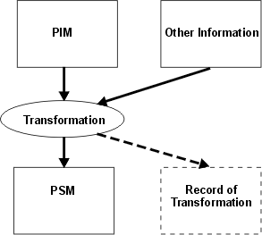

| Концепция: Model-Driven Development (MDD) and Model Driven Architecture (MDA) |
 |
|
| Связанные элементы |
|---|
IntroductionModels are an important kind of work product in the Rational Unified Process and are typically expressed (in RUP) using the Unified Modeling Language (UML), in a tool and environment-neutral way, so that RUP may be deployed and enacted with many toolsets in many environments. The Supporting Material: Visual Modeling explores some of the reasons for modeling, including:
Models are seen as a way to reason about system behavior (both desired and realized) and structure, and communicate the results of these deliberations to interested stakeholders. MDD and MDA emphasize the role of models as foundational elements for implementation, in the expectation that they will be more than blueprints based on which human developers will write code, but are themselves enactable or executable to a degree depending on the capability of the supporting toolset. This follows a trend, begun a long time ago, of increasing the level of abstraction at which the human developer works. This shifts the spotlight from code as we know it, to models expressed in a yet higher, perhaps graphical, language. RUP, by identifying certain artifacts as models rather than documents (capturing requirements and design, for example) containing pictures of models, implicitly supports this possibility. Viewpoints and ViewsA viewpoint, as its name implies, is a notional position from which some aspects or concerns about the system (or the set of models representing the system) are made visible, implying the application of a set of concepts and rules to form a conceptual filter. The term "perspective" is used similarly, to describe a way of viewing and understanding models that best serves the many different orientations and concerns of the diverse stakeholders. Views are projections of models, which show entities that are relevant from a particular viewpoint or perspective. In MDD, viewpoints and views are used to separate concerns, for example, to deal with the logical structure independently of the physical structure and independently of the process structure. The closer the models are to the problem domain, the more strongly the viewpoints or perspectives map to the business concerns of the stakeholders; as the models are developed closer to executable form, the more computational concerns intrude. In either case, the aim is not simply to produce passive illustrations, but models that are, at least potentially, generative of implementations that satisfy these separate concerns. Elaboration and Translation (Transformation)These terms are often used informally to distinguish between model changes done by hand (elaboration) and model changes done by a tool (translation). In RUP, elaboration has a quite different formal meaning - it is the name of a life-cycle phase - but in this section, we are using it informally to illustrate apparently differing approaches to the evolution of models. There is also a sense of different step size in translation and elaboration - a sense that a model is elaborated in several small steps until there is sufficient detail (including language, infrastructure or operating system detail) to generate code from it, either by a tool or manually. By manually, we mean that a human can look at the model and write Java, C++, or other languages, possibly elaborating further in the process. In contrast, in translation, the model, still at a level of abstraction unsullied by language, infrastructure or operating system concerns, is converted into something that executes and produces the desired result with little or no further elaboration. Note that the desired result includes performance and other non-functional characteristics. Therefore, implicit in this approach, is that such cross-cutting architectural concerns are addressed in the way the model is constructed and the way in which it describes resource requirements. Another word, Term Definition: transformation, has come into currency, to describe the process of generating a target model from a source model by following a set of rules and working according to a set of parameters. Note that we use the term "model" here in the same way as RUP, so the target model could be the implementation elements, for example, code or text. Of course, transformation can be done by hand, which makes successive transformations (adding detail) equivalent to elaboration, and the rules may be very complex and rooted in deep experience of the available technology and the domain. The default meaning however, is that transformation is done automatically, which is examined again in the next section on Model Driven Architecture®. Note that the idea of transformation simply involves a source model and a target model. The usual case is that the target model is less abstract than the source model, that is, that the target is somehow more specific than the source, but this is not implicit in the idea of transformation. Note that transformation can also add detail to a model, producing a target model that is more refined, while remaining broadly at the same level of abstraction, in that no information relevant to another domain is introduced. Contrast this with a transformation that produces code from a UML model, much is introduced into this target model that is of no concern to the business stakeholder, provided required behavior and nonfunctional characteristics are maintained. The ability to realize the translation ideal depends on the capabilities of the tool and our ability to codify, capture and reuse the knowledge employed by an experienced human. The amount of knowledge that must be captured and codified depends on the level of abstraction from which we make our translation step - the higher the level, the more knowledge and the more domain dependence, typically. In MDD, we strive to raise the level of abstraction from which we can automatically generate an operational system. A model is elaborated to the point where it can be used to generate something. Then the strong preference is that the output does not have to be elaborated further to execute. Further, our ambition is to make the preceding elaboration, as far as possible, through successive automated transformations. Thus, the two approaches converge: translation is realized by successive transformation steps, automated as far as possible. The final transformation to executing system occurs with the model description still at a high level of abstraction, and with the technology, infrastructure, and target language selections encoded in the transformation engine, and the rules and data supplied to it. An additional benefit of MDD is that we hope to be able to reuse transformations, by having them codify platform and domain knowledge and best practices through creation by experts in the corresponding domains. In this way, we facilitate reuse by less skilled developers and avoid re-creation from scratch with each new application. What is a High Level of Abstraction?There are a few ways to look at this. One is along the spectrum of language, and we are seeing the emergence of forms of executable UML, for example. Another is from the perspective of domain engineering, where the language and modeling concepts may be specialized for the domain. For example, UML is a general-purpose language, so, along this dimension you find the use of Term Definition: UML profile to specialize the use of UML. Yet another way is the felt need to avoid vendor-specific, infrastructure-specific models so as to remain open to new technology. In terms of expression of the detailed dynamics, the work done on UML Action Semantics has made executable forms of UML a possibility, but the concrete syntax and notation are not standardized and the level of the Action Semantics is akin to other OO languages. Therefore, UML plus Action Semantics is probably not the final answer, but it is an indication of where things are headed. We conclude that a model expressed in UML, or using a UML profile, that contains no vendor-dependent elements, is not dependent on a particular infrastructure platform, such as J2EE or Microsoft® .NET, and is semantically complete in structure and behavior without recourse to a particular procedural language (Java, C#, ...) is at a high level of abstraction by this definition, although the issue of the level of the Action Semantics remains. From a problem-domain perspective, that is, the user or business customer viewpoint, a possible and attractive solution is the formulation of domain-specific modeling languages. These are languages that are abstract, in the sense that they are couched in terms and concepts familiar to workers in the particular domain, yet are complete in their ability to express model dynamics, while still being UML based. How does this relate to RUP?The relationship of the RUP Analysis, Design and Implementation Models illustrates these ideas: the Analysis Model represents an early view of how the behavior expressed in use cases will be realized; it is naturally skewed descriptively towards the domain of the problem being addressed, and the Analysis Classes it contains are regarded as conceptual groupings of the required responsibilities and behavior. The Analysis Model is not usually complete enough to execute, except perhaps in a thought experiment by a human reading the model and filling in the gaps, because too much is left unsaid. Instead, the Analysis Model has to go through a process of refinement, adding detail and precision, resulting in the Design Model. RUP allows a project to maintain a separate Analysis Model or to regard the Analysis Model as something that evolves into the Design Model. The process of refinement is described at some length in RUP's tasks, with the default interpretation that humans playing the roles of Software Architect and Designer will accomplish this evolution, probably with considerable tool assistance. Note that this refinement can be regarded as a sequence of model transformations, some of which may potentially be automated, for example, in the application of Term Definition: analysis pattern and Term Definition: design pattern patterns in the RUP tasks Architectural Analysis and Identify Design Mechanisms . When is the Design Model Complete?The Design Model evolves throughout the life of the project, through several iterations; therefore, when is the Design Model (or some portion of it) able to be turned into code, that is, when can we start to produce Implementation Elements and integrate them into interesting Builds of the system? RUP offers some guidance on Mapping from Design to Code but fundamentally there are no hard and fast answers. You move to implementation when, through review for example, you judge that you can, and that point can vary considerably between organizations and projects. RUP offers a number of ways to proceed from design to code, two of which we discuss here to illustrate how decisions about design completeness are made:
1. Sketch and Code To be successful with this approach requires that the developer is able to bridge the abstraction gap between the design and implementation levels. Often maintenance of the design model is a secondary concern and the code becomes the focus!
2. Round-Trip Engineering (RTE) with Single Evolving Design Model Here the developers close the abstraction gap with a sequence of modeling steps. The difference between this approach and "sketch and code" is that the intermediate steps are manifest and, at the end, the abstract version of the design model has disappeared. In both cases, the potential value of an abstract design model is lost: in "sketch and code" because the abstract design model is typically not maintained and, over time, loses touch with the code and in "single evolving design model" because the abstract version disappears. Even if an initial version is kept, it usually suffers the same fate as the sketch and code design model. Note that the end point for the design model with RTE is really code visualization, and a similar visualization could be reverse-engineered from code produced in sketch and code with appropriate tooling. In RUP, we mitigate the loss of the abstract design model, to some extent, by capturing significant architectural views and design rationale, at critical points, in the Software Architecture Document.
MDD offers the hope that the abstract design model will become foundational to code generation and have longevity. It
becomes the primary basis for maintenance and, in fact, may be the only basis for maintenance. It also offers a clear
definition of the end point for design, that is, that point at which, as far as the transformation engine is concerned,
the model is complete, consistent and unambiguous and able to be turned into an executable system. How abstract the
model can be depends on the available technology and toolset (for an example see The next section describes an emerging framework standard for MDD, an initiative of the Object Management Group (OMG) called Model Driven Architecture® (MDA®). Model Driven Architecture (MDA)MotivationMDA is an initiative of the OMG, an industry consortium of some 800 members with a mission to establish standard guidelines and specifications to provide a common vendor-neutral framework for application development and encourage interoperability across major hardware and software infrastructure platforms. The Unified Modeling Language is a product of the OMG. The OMG now promotes MDA as its flagship specification and with the OMG's stance as the promulgator of practical standards intended to be supported by industry IC, practice, products and tools, and noting the success of UML, MDA is worthy of study. There is a wealth of information on MDA, including the most recent MDA Guide [OMG03], on the OMG's Web site . There are also several books available such as [FRA03], [KLE03], and [MEL04] and many articles, such as "An MDA Manifesto" by Grady Booch, Alan Brown, Sridhar Iyengar, James Rumbaugh and Bran Selic in The MDA Journal, May 2004. MDA's Core IdeasMDA introduces some specific concepts and terminology that distinguish it from more general approaches to MDD, and these are defined and discussed in the following sections. Building on Existing StandardsMDA is underpinned by existing OMG standards, including:
Platform IndependenceAn intuitive notion of a Term Definition: platform is that it supports a higher architectural layer through provision of services with a well-defined set of interfaces that hide the implementation details. The OMG definition (in the MDA Guide) of platform is: "A set of subsystems/technologies that provide a coherent set of functionality through interfaces and specified usage patterns that any subsystem that depends on the platform can use without concern for the details of how the functionality provided by the platform is implemented." This is similar to the concept of a Term Definition: layer as it is used in RUP. The idea of platform independence is slightly slippery: it is a quality or characteristic of a model, for example, one might say a model is independent of a particular platform when it does not contain any references to services or capability provided by that platform. However, the statement is relative because it is difficult to envisage an absolute form of platform independence. The MDA Guide acknowledges this and also admits the possibility of degrees of platform independence with respect to a particular platform where, for example, a model uses a generalized form of a feature in a particular platform. The achievement of platform independence has been assisted by the evolution of platforms such as J2EE, .NET and WebSphere, to increasing levels of abstraction in terms of what is exposed to applications. This makes the identification of platform-neutral constructs much more tractable and the platform-specific transformations that convert them much simpler and easier to write. Platform Independent Model (PIM)It follows that we can say a model is a PIM with respect to a particular platform when it is not bound to usage of that platform and could be used with any platform of that type. In a previous section, we discussed the idea of a high level of abstraction and concluded that a model expressed in UML (or using a UML profile) that contains no vendor-dependent elements, is not dependent on a particular infrastructure platform, and is semantically complete in structure and behavior without recourse to a particular procedural language was at least notionally executable and at a high level of abstraction. Is such a model platform independent? Yes and no. No, with respect to a perhaps imaginary UML Virtual Machine, and yes, with respect to a whole class of platforms on which such a virtual machine would depend. Platform ModelThe platform model is that set of concepts (representing parts and services), specifications, interface definitions, constraint definitions and any other requirements that an application needs to use a particular platform. In MDA, the platform models are detailed and formalized in UML, for example, and available in a MOF-compliant repository. For example, platform models could be built for J2EE or .NET, among others. Platform Specific Model (PSM)A PIM is transformed into one or more PSMs by the addition of information that makes it specific to a particular platform or platforms. The PIM and the PSM still specify the same system, but the PSM is constrained to particular technology and may contain platform-specific elements. Note that there is no implication that a transformation step (PIM to PSM, or its associated platform) is large or small. A transformation involving the application of a small set of patterns refines the model and, in some sense makes it more specific; this emphasizes the relativity of the terms PIM and PSM. Viewpoints and ViewThese terms are used in the same way in MDA as we described for MDD:
MDA specifies three viewpoints on a system: a computation independent viewpoint, a platform independent viewpoint, and a platform specific viewpoint. Computation Independent ViewpointFrom the computation independent viewpoint, you are concerned about the context for the system, the requirements and constraints under which it must operate, and the things in the environment with which it must interact. From this viewpoint, you do not see details of system structure or behavior. The Computation Independent Model (CIM) is a view of the system or system-to-be from the computation independent viewpoint. The CIM is similar in concept to a combination of the Domain Model in RUP, which is the set of artifacts, including Business Glossary and Business Analysis Model, that is output from the Task: Develop a Domain Model (in Business Modeling), and the Use-Case Model, which is the computationally-independent description of the behavior of the system. The CIM, which is couched in the language of the subject-matter or domain experts, is an important link in the identification, during Analysis and Design, of key abstractions in the system-to-be. Platform Independent ViewpointThe platform independent viewpoint is relative to a particular platform. From that viewpoint you can see the structure and behavior of a system without the details of that platform. The PIM is a view of the system from the platform independent viewpoint. Platform Specific ViewpointFrom the platform specific viewpoint, also relative to a specific platform, you can see what was visible from the platform independent viewpoint but now with the platform usage details revealed. The PSM is a view of the system from a platform specific viewpoint. Automation of Transformation
The idea of transformation is fundamental to MDA and model transformation is defined simply as "the process of
converting one model to another model of the same system". MDA also defines a little pattern to visualize the
conversion and to illustrate use of some of the terminology we have seen:  The MDA Pattern The intention of the diagram is to show that the transformation is a first-class thing: the transformation takes the PIM and other information and combines them to produce the PSM. Model transformation can, of course, be done manually. This is little different than the way software design has always proceeded. Even here, MDA is useful in delineating and formalizing the idea of transformation, the process, and the additional information to be used. MDA also suggests that a record of the transformation be produced; this provides strong traceability from the PIM to the PSM because it should include a map from the elements of the PIM to the elements of the PSM. Most leverage comes from being able to automate transformations, even if only partially, yielding the same advantages that came from the replacement of assembler programming with high-level languages. How is Transformation Performed?MDA does not prescribe a single way to do transformation: a mapping, driven by the choice of a platform, is prepared to give a specification of how to transform a PIM into a PSM for that platform; this mapping results in a transformation definition (perhaps expressed as a set of transformation rules), possibly with transformation parameters, written in a transformation definition language. Note that the OMG issued an RFP (MOF 2.0 Query/Views/Transformations RFP) in the expectation of standardizing (for the MOF) languages for creating model views, querying a model and writing transformation definitions. The MDA Guide describes several approaches to transformation, including:
For more detail, the reader is referred to the MDA Guide [OMG03]. How is Transformation Applied?The simplest scenario for the application of MDA is:
PSMs for other platforms can be generated in the same way.
Repeated Application of the MDA Pattern
|
© Copyright IBM Corp. 1987, 2006. Все права защищены.. |